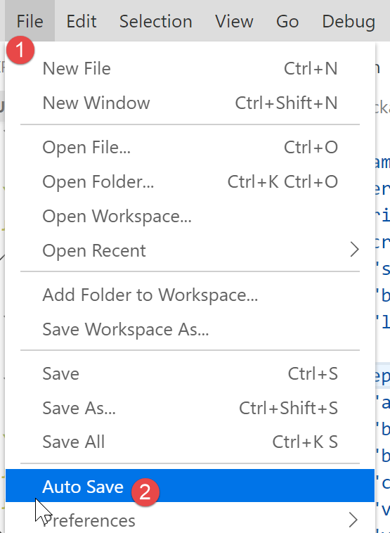

2. Création d’un environnement de travail
Nous reprenons l’environnement de travail détaillé dans le document [2] :
- Visual Studio Code (VSCode) pour écrire les codes JavaScript ;
- [node.js] pour les exécuter ;
- [npm] pour télécharger et installer les bibliothèques JavaScript dont nous aurons besoin ;
Nous créons un environnement de travail dans [VSCode] :

- en [1-5], nous ouvrons un dossier [vuejs] vide dans [VSCode] ;

- en [8-10], on installe la dépendance [@vue/cli] qui va nous permettre d’initialiser un projet [vue.js]. Cette dépendance amène un grand nombre de packages (plusieurs centaines) ;
Dans le même terminal, on tape ensuite la commande [vue create .] qui demande à créer un projet [vue.js] dans le dossier courant (.) :

- en [13], commence une série de questions qui servent à configurer le projet ;

- une fois toutes les questions répondues, de nouveaux packages sont téléchargés et un projet généré dans le dossier courant [14].
Regardons ce qui a été généré. Le fichier [package.json] est le suivant :
{
"name": "vuejs",
"version": "0.1.0",
"private": true,
"scripts": {
"serve": "vue-cli-service serve vuejs-20/main.js",
"build": "vue-cli-service build vuejs-20/main.js",
"lint": "vue-cli-service lint"
},
"dependencies": {
"axios": "^0.19.0",
"bootstrap": "^4.3.1",
"bootstrap-vue": "^2.0.2",
"core-js": "^2.6.5",
"vue": "^2.6.10",
"vue-router": "^3.1.3",
"vuex": "^3.1.1"
},
"devDependencies": {
"@vue/cli-plugin-babel": "^3.11.0",
"@vue/cli-plugin-eslint": "^3.11.0",
"@vue/cli-service": "^3.11.0",
"babel-eslint": "^10.0.1",
"eslint": "^5.16.0",
"eslint-plugin-vue": "^5.0.0",
"vue-template-compiler": "^2.6.10"
},
"eslintConfig": {
"root": true,
"env": {
"node": true
},
"extends": [
"plugin:vue/essential",
"eslint:recommended"
],
"rules": {},
"parserOptions": {
"parser": "babel-eslint"
}
},
"postcss": {
"plugins": {
"autoprefixer": {}
}
},
"browserslist": [
"> 1%",
"last 2 versions"
]
}
Commentaires
- lignes 14-22 : dans les dépendances nécessaires au développement on voit des références aux deux outils [eslint, babel] déjà utilisés dans les deux chapitres précédents. S’y ajoutent des plugins de ces deux outils destinés à leur utilisation au sein de [vue.js] ;
- ligne 34 : c’est le package [babel-eslint] qui opèrera la transpilation ES6 -> ES5 des codes jS ;
- lignes 5-9 : trois tâches [npm] ont été créées :
- [build] : sert à construire la version compilée du projet prête à entrer en production ;
- [serve] : exécute le projet sur un serveur web. C’est avec cet outil que sont faits les tests lors du développement. Comme avec [webpack-dev-server], une modification d’un code source du projet provoque automatiquement la recompilation du projet et son rechargement par le serveur web ;
- [lint] : sert à analyser les codes jS et délivre des rapports. Nous n’utiliserons pas cet outil ici ;
Un fichier [README.md] a été généré avec le contenu suivant :
# vuejs
## Project setup
```
npm install
```
### Compiles and hot-reloads for development
```
npm run serve
```
### Compiles and minifies for production
```
npm run build
```
### Run your tests
```
npm run test
```
### Lints and fixes files
```
npm run lint
```
### Customize configuration
See [Configuration Reference](https://cli.vuejs.org/config/).
Ce fichier résume les commandes à utiliser pour gérer le projet.
Nous savons que dans [VSCode], les tâches [npm] sont proposées à l’exécution :

- en [1-3], nous exécutons la commande [serve] qui va compiler, puis exécuter le projet [4-5] ;
A l’URL [http://localhost:8080], nous obtenons la page suivante :

Nous expliquerons un peu plus loin ce qui a amené à cette page.
Continuons à configurer notre environnement de travail :

- en [2] ci-dessus, nous voyons des indicateurs [git]. [git] est un gestionnaire de code source permettant de gérer des versions successives de celui-ci et de les partager entre développeurs. Nous allons désactiver cet outil pour le projet ;
- en [3-5], nous allons dans les propriétés du projet ;

- en [9-10], on désactive l’utilisation de [git] dans le projet ;
Nous allons écrire divers tests pour montrer le fonctionnement de [vue.js]. Nous ne voulons cependant pas créer à chaque fois un nouveau projet car il faudrait alors à chaque fois générer un dossier [node_modules] alors que celui-ci fait plusieurs centaines de méga-octets. Revenons sur les tâches [npm] du fichier [package.json] :
"scripts": {
"serve": "vue-cli-service serve vuejs-00/main.js",
"build": "vue-cli-service build vuejs-00/main.js",
"lint": "vue-cli-service lint"
},
- ligne 2 : la commande [serve] utilise par défaut :
- le fichier [public/index.html] ;
- associé au fichier [src/main.js] ;
Ligne 2, il est possible de préciser à la commande [serve], le point d’entrée du projet, par exemple :
"serve": "vue-cli-service serve vuejs-00/main.js",
Essayons :

- en [1], le dossier [src] a été renommé en [vuejs-00] ;
- en [2-3], on a modifié la commande [serve] ;
- en [4-6], on exécute le projet ;
On obtient le même résultat que précédemment :

Pour nos tests, nous procéderons donc ainsi :
- écriture de code dans un dossier [vuejs-xx] du projet ;
- test de ce projet avec la commande [vue-cli-service serve vuejs-xx/main.js] dans le fichier [package.json] ;
Lorsque le serveur de développement est lancé, toute modification d’un des fichiers du projet provoque une recompilation. Pour cette raison, nous inhibons le mode [Auto Save] de [VSCode]. En effet, nous ne voulons pas de recompilation dès qu’on tape des caractères dans un des fichiers du projet. Nous ne voulons de recompilation qu’à certains moments :

- en [2], l’option [Auto Save] ne doit pas être cochée ;